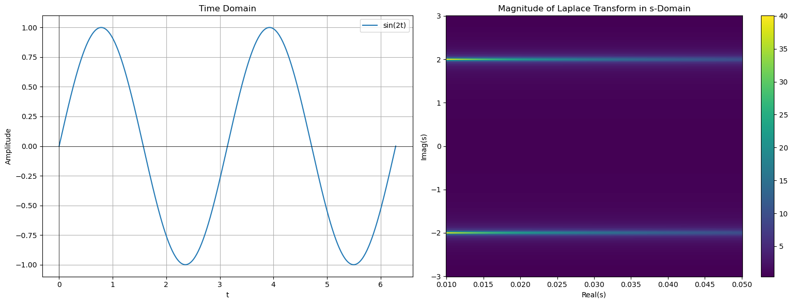

The Laplace Transform is a powerful mathematical tool used primarily to simplify the process of analyzing and solving linear ordinary differential equations and systems. By converting functions of time into functions of a complex variable, it transforms differential equations into algebraic equations, which are often easier to solve.
Integral Transform
Definition
For a given function f(t), defined for \(t\geq 0\), The Laplace Transform of f(t) is given by:
$$\mathcal{L}\{f(t)\}=F(s)=\int_0^\infty e^{-st}f(t)dt$$
where s is a complex number and F(s) is the image of f(t) under the transform.
Region of Convergence
The Region of Convergence (ROC) is an essential concept associated with the Laplace Transform. It specifies the set of complex numbers, s, for which the Laplace Transform converges.
Inverse Laplace Transform
The Inverse Laplace Transform is a process used to revert a function from the Laplace domain back to the time domain. It is denoted as
\(\mathcal{L}^{-1}\)
The mathematical formulation involves complex analysis since you are integrating with respect to a complex variable.
Thus, we will just refer to tables when finding the Inverse Laplace Transform.
Definition
If F(s) is the Laplace Transform of a function f(t), then the Inverse Laplace Transform is such that
$$f(t)=\mathcal{L}^{-1}\{F(s)\}$$
Properties
Linearity
$$\mathcal{L}\{af(t)+bg(t)\}=aF(s)=bG(s)$$
for constants a,b.
This can be easily shown by the distributive property of multiplication and linearity of integration.
The convolution of two functions in the time domain is the pointwise multiplication in the frequency domain.
Let h be the convolution of f(t) and g(t):
$$h(t)=\int_0^tf(\tau)g(t-\tau)d\tau$$
Then the Laplace transform of h(t) is given by
$$\mathcal{L\{h(t)\}}=F(s)G(s)$$
The below figure shows a graph of \(f(t)=\sin(2t)\) and its Laplace transform. Note how the max of the Laplace transform is at \(\text{Im}(s)=\pm \omega\)

Sine Laplace Transform
import numpy as np
import matplotlib.pyplot as plt
# Define omega (angular frequency)
omega = 2
# Time vector
t = np.linspace(0, 2*np.pi, 400) # Two periods for clarity
sin_omega_t = np.sin(omega * t)
# s-domain (frequency domain) vector
s_real = np.linspace(0.01, .05, 400)
s_imag = np.linspace(-3, 3, 400)
S_real, S_imag = np.meshgrid(s_real, s_imag)
S = S_real + 1j*S_imag
F_s = omega / (S**2 + omega**2)
# Plotting
fig, ax = plt.subplots(1, 2, figsize=(16, 6))
# Time domain plot
ax[0].plot(t, sin_omega_t, label=f"sin({omega}t)")
ax[0].set_title("Time Domain")
ax[0].set_xlabel("t")
ax[0].set_ylabel("Amplitude")
ax[0].axhline(0, color='black',linewidth=0.5)
ax[0].axvline(0, color='black',linewidth=0.5)
ax[0].legend()
ax[0].grid(True)
# Frequency domain plot (Magnitude)
magnitude = np.abs(F_s)
c = ax[1].pcolormesh(S_real, S_imag, magnitude, shading='auto', cmap='viridis')
ax[1].set_title("Magnitude of Laplace Transform in s-Domain")
ax[1].set_xlabel("Real(s)")
ax[1].set_ylabel("Imag(s)")
fig.colorbar(c, ax=ax[1])
plt.tight_layout()
plt.show()
Solving ODEs with Laplace Transform
Take Laplace Transform of both sides of the equation
Use a transform table if the functions are common; otherwise, you can explicitly do the integral transform by the definition.
Use algebraic techniques and properties of the Laplace transform to solve for Y(s)
This often involves the use of partial fraction decomposition.
Use the inverse Laplace transform or table to obtain y(t)
Since s is a complex variable, taking an integral with respect to it is non-trivial.
Since having complex analysis isn't expected, a transform table should be referred to.
Exercises
Compute the Laplace transform of \(f(t)=t^2\)
Compute the Laplace transform of \(f(t)=e^{-2t}\)
Find the inverse Laplace transform of \(F(s)=\frac{2s+3}{s^2+2s+5}\)
Use the laplace transform to solve \(y''+y=\sin(t)\) with initial conditions y(0)=0 and y'(0)=1